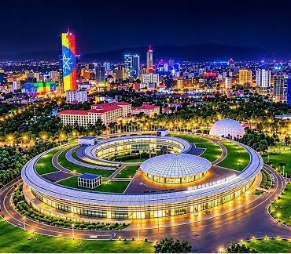
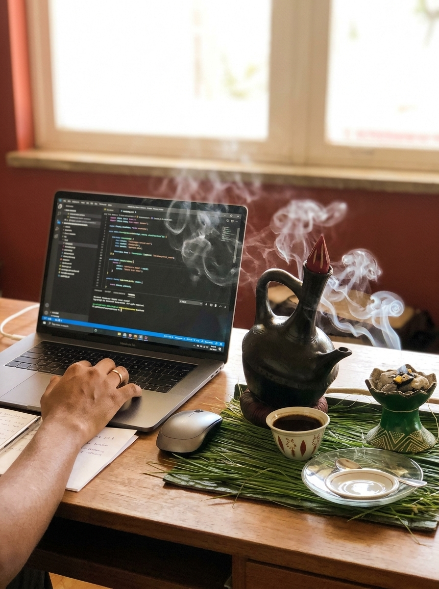
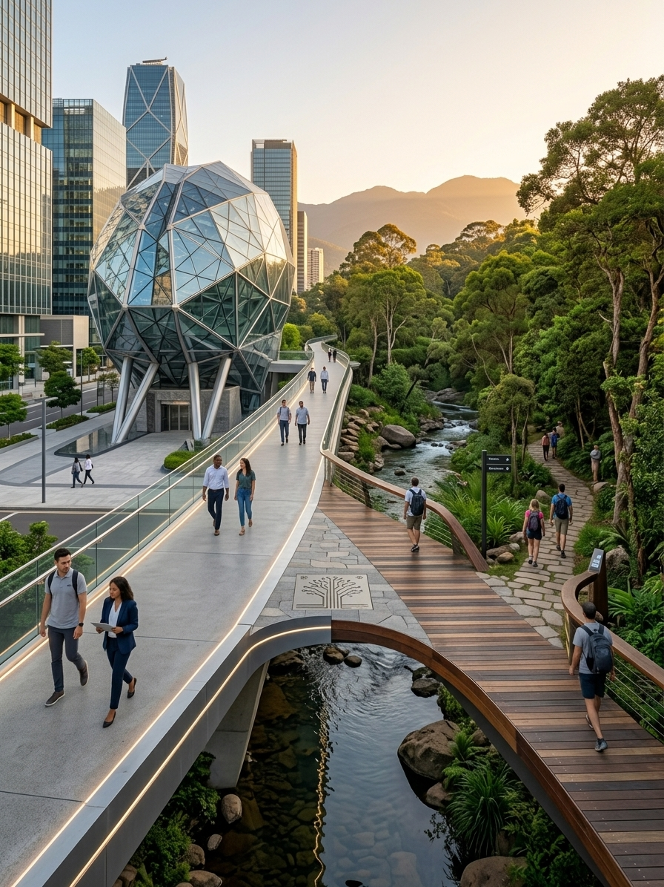

bridge.technologies
-
Bridge Technologies · Ethiopia
-

Ethiopia, going digital. Photo · Firaol Debela Lafto -
Based in Ethiopia, at roughly 8 degrees north and 38 degrees east.
-

Ethiopia Coffee & code -
Design.
Build.
Repeat.Bridge · Technologies
-

Technology meets nature. Ethiopia · UTC+3